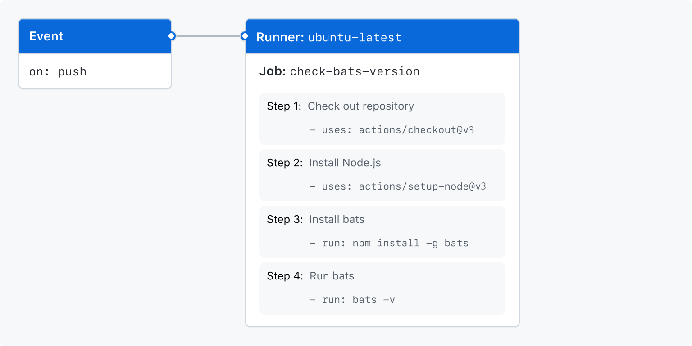

For more information about best practices for securing your workflows and secure use of GitHub Actions features, see Secure use reference.
Creating an example workflow
GitHub Actions uses YAML syntax to define the workflow. Each workflow is stored as a separate YAML file in your code repository, in a directory named .github/workflows.
You can create an example workflow in your repository that automatically triggers a series of commands whenever code is pushed. In this workflow, GitHub Actions checks out the pushed code, installs the bats testing framework, and runs a basic command to output the bats version: bats -v.
In your repository, create the .github/workflows/ directory to store your workflow files.
In the .github/workflows/ directory, create a new file called learn-github-actions.yml and add the following code.
Commit these changes and push them to your GitHub repository.
Your new GitHub Actions workflow file is now installed in your repository and will run automatically each time someone pushes a change to the repository. To see the details about a workflow's execution history, see Viewing the activity for a workflow run.
Understanding the workflow file
To help you understand how YAML syntax is used to create a workflow file, this section explains each line of the introduction's example:
# Optional - The name of the workflow as it will appear in the "Actions" tab of the GitHub repository. If this field is omitted, the name of the workflow file will be used instead.
name: learn-github-actions
# Optional - The name for workflow runs generated from the workflow, which will appear in the list of workflow runs on your repository's "Actions" tab. This example uses an expression with the `github` context to display the username of the actor that triggered the workflow run. For more information, see [AUTOTITLE](/actions/using-workflows/workflow-syntax-for-github-actions#run-name).
run-name: ${{ github.actor }} is learning GitHub Actions
# Specifies the trigger for this workflow. This example uses the `push` event, so a workflow run is triggered every time someone pushes a change to the repository or merges a pull request. This is triggered by a push to every branch; for examples of syntax that runs only on pushes to specific branches, paths, or tags, see [AUTOTITLE](/actions/reference/workflow-syntax-for-github-actions#onpushpull_requestpull_request_targetpathspaths-ignore).
on: [push]
# Groups together all the jobs that run in the `learn-github-actions` workflow.
jobs:
# Defines a job named `check-bats-version`. The child keys will define properties of the job.
check-bats-version:
# Configures the job to run on the latest version of an Ubuntu Linux runner. This means that the job will execute on a fresh virtual machine hosted by GitHub. For syntax examples using other runners, see [AUTOTITLE](/actions/reference/workflow-syntax-for-github-actions#jobsjob_idruns-on)
runs-on: ubuntu-latest
# Groups together all the steps that run in the `check-bats-version` job. Each item nested under this section is a separate action or shell script.
steps:
# The `uses` keyword specifies that this step will run the `actions/checkout@v6` action. This is an action that checks out your repository onto the runner, allowing you to run scripts or other actions against your code (such as build and test tools). You should use the checkout action any time your workflow will use the repository's code.
- uses: actions/checkout@v6
# This step uses the `actions/setup-node@v4` action to install the specified version of the Node.js. (This example uses version 20.) This puts both the `node` and `npm` commands in your `PATH`.
- uses: actions/setup-node@v4
with:
node-version: '20'
# The `run` keyword tells the job to execute a command on the runner. In this case, you are using `npm` to install the `bats` software testing package.
- run: npm install -g bats
# Finally, you'll run the `bats` command with a parameter that outputs the software version.
- run: bats -v
Visualizing the workflow file
In this diagram, you can see the workflow file you just created and how the GitHub Actions components are organized in a hierarchy. Each step executes a single action or shell script. Steps 1 and 2 run actions, while steps 3 and 4 run shell scripts. To find more prebuilt actions for your workflows, see Using pre-written building blocks in your workflow.

Viewing the activity for a workflow run
When your workflow is triggered, a workflow run is created that executes the workflow. After a workflow run has started, you can see a visualization graph of the run's progress and view each step's activity on GitHub.
On GitHub, navigate to the main page of the repository.
Under your repository name, click Actions.
In the left sidebar, click the workflow you want to see.
From the list of workflow runs, click the name of the run to see the workflow run summary.
In the left sidebar or in the visualization graph, click the job you want to see.